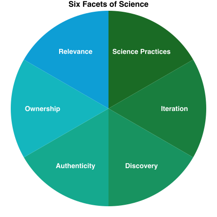

Summative Assessment
Module Goals
In this module, we hope you will...
- Define summative assessment, including its purpose, characteristics, and when it is typically used in the learning process.
- Describe how different summative assessment techniques gather different information about a student’s learning.
- Explain how post-assessment processing can benefit your instructional practice.
- Identify practices that enhance equity in the design of summative assessments.
Summative Assessment Defined
By the end of this section, you will be able to:
- Define summative assessment, including its purpose, characteristics, and when it is typically used in the learning process.
- Understand key concepts and principles:
- Summative assessments are designed to evaluate whether students have achieved the intended learning objectives at the end of a learning period
Summative assessments are evaluations conducted at the end of a learning period to determine a student’s overall understanding and development of expertise. As seen in the backward design process, summative assessments measure how well students met the learning objectives.
Unlike formative assessments, which are ongoing and provide feedback during the learning process, summative assessments are typically administered after a unit has been completed to provide a summary of a student’s learning progress and achievement.
Examples of summative assessments include:
- Comprehensive tests (e.g., quizzes and exams)
- Research papers, essays, and lab reports
- Projects
- Presentations
- Performance assessments (e.g., demonstrating aseptic technique during a lab practical)
TODO figure on slide 6
Match each statement below to the type of assessment it is most characteristic of, formative assessment or summative assessment:
- Administration: flexible and through a variety of methods such as quizzes, discussions, observations, or informal assessments
- Administration: under standardized conditions with specific guidelines for administration, scoring, and reporting
- Feedback: is immediate or ongoing, which allows for adjustments to learning strategies
- Feedback: is provided to students and instructors, but the feedback is focused on assessing a student’s overall achievement
- Focus: on the outcomes of learning and understanding of the materials
- Focus: on the process of learning, encouraging students to reflect on their progress and take ownership of their learning
- Purpose: to evaluate students’ overall understanding and achievement on established learning objectives
- Purpose: to provide ongoing feedback on student learning to students and teachers
- Stakes: often high
- Stakes: often none or low
- Timing: conducted at the end of a learning period
- Timing: conducted throughout the learning process, often on a regular basis
Why Summative Assessment
By the end of this section, you will be able to:
- Describe the role of summative assessments in evaluating student learning and informing teaching practice.
- Understand key concepts and principles:
- Summative assessments are a valuable tool for evaluating achievement of the established learning objectives and providing feedback to both students and instructors.
- Instructors should use summative assessment data to inform their teaching practice and make adjustments to improve student learning.
Summative assessments play a multifaceted role beyond merely assigning grades to students. They serve as invaluable tools for evaluating student learning and providing feedback to both learners and instructors.
From the scientific teaching perspective, these assessments provide instructors essential data to gauge the extent to which students have met predefined objectives as well as identifying areas where additional support may be required. As a scientific instructor, collecting and analyzing this data is crucial in refining your teaching practice (Ebert-May, Batzli, & Lim, 2003) and is aligned with calls to teach science the same way it is practiced (AAAS 1990, Annenberg/CPB 1997, NRC 1997, 1999, Bransford et al. 1999, Pellegrino et al. 2001, Cech 2003).
Like a scientist uses data to evaluate their hypotheses, a scientific instructor uses assessment data to evaluate their instructional practice. And given the importance of engaging students in scientific practices to equip them for future careers in science, summative assessments need to extend beyond evaluation of content knowledge and assess competencies expected for aspiring science practitioners.
Furthermore, summative assessments serve as pivotal milestones in a course’s trajectory, marking significant targets for students to strive toward. They hold students accountable for their learning and represent indicators of their increasing expertise and competence in the subject matter.
Feedback from summative assessments aids students in refining their study strategies and preparing for subsequent evaluations, thus facilitating ongoing growth and improvement. Engaging in summative assessments and their feedback equips students for future careers and/or for graduate school. For example, writing lab reports helps students practice communicating what they learned and explaining research findings—both valuable skills for science practitioners.
A Framework for Summative Assessment
By the end of this section, you will be able to:
TODO- Understand key concepts and principles:
TODO
You already have the frameworks!
Recall that when we leverage backward design, we:
- Craft learning objectives
- Articulate what evidence would indicate competency or accomplishment of the learning objectives.
- Those pieces of evidence will provide the basis for you to plan the summative assessments that will punctuate and reinforce the rest of the learning experiences in your STEM course.
When considering summative assessments, we are concerned with the second point, articulating evidence of accomplishment.
Some aspects of summative assessment to consider when designing them include:
- How do they assess the intended learning outcomes?
- How do they support the facets of science?
- How do they fit into learning?
- How do they manifest universal design principles?
- Which summative assessments are connected to grades, and how?
- At what point(s) will they punctuate the course?
- What type, frequency, etc.?
Summative Assessment in Practice
By the end of this section, you will be able to:
- Describe how different summative assessment techniques gather different information about a student’s learning.
- Develop a comprehensive summative assessment plan that addresses the skills and knowledge of the course.
- Describe the importance of using rubrics to evaluate summative assessments and support student learning.
- Outline how to write a rubric.
- Understand key concepts and principles:
- Intentionally choose summative assessments that help you gain a more comprehensive understanding of a student's learning.
- Assessments should measure students' ability to demonstrate scientific skills and bring science to life.
- Rubrics provide detailed descriptions of the criteria and standards used to assess student performance, reducing subjective and biased grading.
- Share the rubric with students so that they know what is expected of them to achieve a particular grade.
Summative assessments are a critical component of course design, but what techniques should you incorporate?
How you choose which assessment technique to use is dependent on the information you are trying to gather. Different summative assessments gather different information about a student’s learning by focusing on various aspects of their knowledge, skills, and abilities.
Each strategy also varies in how broadly/deeply knowledge is assessed, its objectivity, the amount of time/resources it takes to administer and grade, and whether it adds additional performance anxiety to the student.
By using a variety of assessment methods, instructors can gain a more comprehensive understanding of a student’s strengths and areas for improvement.
Summative Assessment Techniques
Table 1. How/Why to Use Common Summative Assessment Techniques
Description here.
| Tests (e.g., quizzes and exams) |
|
|---|---|
| Research papers, essays, lab |
|
| Projects |
|
| Presentations |
|
| Performance assessments |
|
TODO section heading

Reflecting back on backward design, your assessments need to be aligned to the learning objectives of the unit. These learning objectives are ultimately aligned with the learning goals of the course. Therefore, the summative assessment techniques chosen for your course should be informed by what skills and knowledge students need to exhibit competence for your course. In addition, summative assessments are a space for students to demonstrate the facets of science.
Let’s look at some examples how different summative assessment techniques assess various skills—which align with six facets of science—in a science communication course.
- Research papers assess skills in data analysis and visualization, which is a Scientific Practice
- Group projects assess collaboration and project management, which is a part of Authenticity and Ownership
- Individual student presentations assess communication skills, which is a Scientific Practice and part of Relevance
TODO section heading
Now let’s think about your course. How do you want students to demonstrate understanding of the various skills, knowledge, and competencies? In what ways can they demonstrate scientific skills and bring science to life? As the instructor, you have agency to choose how to structure the course’s summative assessment plan.
For example, here are four different summative assessment plans:
Click for a Traditional Exam-Based Example
- Weekly quizzes
- 3 midterm exams
- Final exam
Click for a Writing-Centric Example
- Weekly short answer quizzes
- 4 self-reflection essays
- Final research paper (scaffolded sections due every 2 weeks)
Click for a Project-Based Example
- Weekly quizzes
- Group project: proposal, presentation, report
- Individual self-reflection essay
Click for a Performance-Based Example
- Daily pre-lab quizzes
- 3 lab reports
- 4 lab practicals
- Independent project: proposal, presentation, report
Notice that all the summative assessment plans utilize more than one kind of summative assessment technique except the Traditional Exam-Based plan, which only uses tests. Remember that tests can only assess specific types of knowledge and skills. Thus, a well-designed summative assessment plan includes diverse techniques to capture the different aspects of student knowledge and understanding.
Additionally, well-designed summative assessment plans have a high number of summative assessment opportunities. For example, all of the plans administer weekly or daily quizzes instead of just a few during the whole semester. This way, lower performance on one assessment doesn’t devastate a student's grade and they have multiple opportunities to demonstrate their knowledge and abilities.
Professor Pham is designing an assessment plan for their medical microbiology case studies course. As learning goals for the course, Professor Pham wants all their students to develop skills in collecting and organizing information, communication, and creative thinking as well as understand how microorganisms impact human health and society. Presentations are an excellent medium to assess these competencies.
How could Professor Pham design the presentation assignment to align with facets of science? For example, to target Discovery, the presentation must address potential biases and stereotypes in medical history and reflect on the importance of diversity and inclusion in microbiology research.
Decide which summative assessment techniques you will use in your classroom.
How do they align with the knowledge, skills, and competencies for your course?
How are students demonstrating facets of science?
Rubrics
All summative assessments need to be evaluated in a way that’s standardized and consistent across student work. Rubrics are a tool that can achieve this goal by providing a detailed description of the criteria and standards used to assess student performance. Without rubrics, assessments can be subjective and biased, leading to unfair grading and lack of clarity for students. Rubrics also help instructors identify areas where students need improvement, which can provide specific, targeted support and inform instruction.
To write a rubric, first establish clear and specific criteria that outline the expectations for student performance. What do students need to do to achieve a particular grade? Grading criteria may include elements such as content knowledge, organization, critical thinking, and creativity.
Using your grading criteria, design a rubric. This typically consists of a grid or chart that outlines the specific criteria for success, along with descriptions of different levels of performance for each criterion (e.g., developing, proficient, and excellent). Rubrics help instructors assess student work systematically and consistently, providing feedback that is aligned with the established criteria.
To support student learning, we strongly advise instructors to share rubrics with students prior to the assessment. Rubrics provide transparency and clarity to students about what is expected of them and how their work will be evaluated. Additionally, rubrics allow students to monitor their progress and make improvements based on the established criteria.
Dr. Kane has assigned students to write a lab report on an enzyme assay. She has also provided students with the following rubric:
Table 2. Dr. Kane's Rubric
Description here.
| Points | Criteria |
|---|---|
| 40 | Content: Is the lab report well-written and informative? |
| 35 | Grammar: Are there any spelling, grammatical, or punctuation errors? |
| 25 | Format: Is the paper double-spaced? Is the font Arial and 12-point? Are figure captions after figures and table captions before tables? Is every paragraph indented? Are section headers title case and bold? |
Using the following prompts, provide a critique of the rubric:
- Are the assessment criteria clear?
- Are guidelines for assigning points clear and specific?
- What aspects of the lab report does the rubric emphasize as most important, and are these priorities justified in the context of the assignment?
TODO Inclusive section, slides 24+
An AJEDI Lexicon for Summative Assessment
By the end of this section, you will be able to:
TODO- Understand key concepts and principles:
TODO